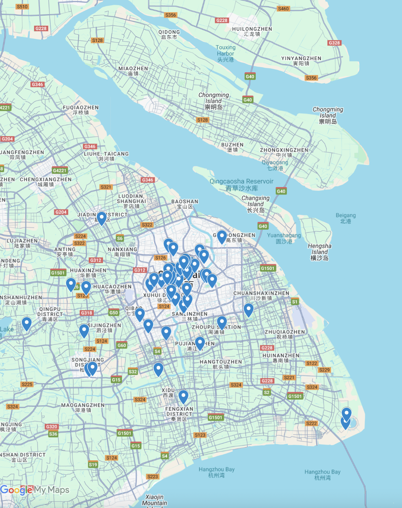

Stages of Shanghai: Performing Arts Center and Shanghai’s Model of Urbanization
By Monica Luo
Final Project for GCHN-SHU 200 Making Our Cities Great taught by Professor Lola Woetzel
0:00 / 0:00
Thank you for listening! I hope this podcast offered insight into how performing arts centers function not only as cultural venues, but as vital social spaces within Shanghai’s model of urbanization.
References
“1998 Nian Wenhua Xianxiang Pingdian [Reflections on Cultural Phenomena in 1998].” Renmin Ribao [People’s Daily], 1999.
Chen, Yawei. “Financialising Urban Redevelopment: Transforming Shanghai’s Waterfront.” Land Use Policy, vol. 112, 105126, 2022, https://doi.org/10.1016/j.landusepol.2020.105126.
Gu, C. (2024). China’s Urbanization Process. In China’s Urbanization (pp. 175–238). Springer. https://doi.org/10.1007/978-981-97-3782-6_4
Kong, Xiangdong. “Art and Life: Using Music as a Mirror to Illuminate the Multidimensional Universe of Sound and Life.” Public Event, NYU Shanghai, 6 Nov. 2025.
Kong, Xiangdong. “Returning to Campus for a Day: Life and Music.” Bank of Communication Private Banking Shanghai Event, NYU Shanghai, 21 Nov. 2025.
Price, David A. “Interview: Edward Glaeser — On Urbanization, the Future of Small Towns, and ‘Yes In My Back Yard.’” Econ Focus, Q4 2021, Federal Reserve Bank of Richmond, https://www.richmondfed.org/publications/research/econ_focus/2021/q4_interview. Accessed 18 Dec. 2025.
“Shanghai Unveils List of 100 New Spaces for Performing Arts.” English — Shanghai Municipal Government, 25 Apr. 2024, english.shanghai.gov.cn/en-Latest-WhatsNew/20240425/434296ce0822481c806b562bedaf8cb6.html. Accessed 19 Dec. 2025.
West, Geoffrey. “The Surprising Math of Cities and Corporations.” TED, filmed May 2017, www.ted.com/talks/geoffrey_west_the_surprising_math_of_cities_and_corporations. Accessed 18 Dec. 2025.
Zeng, Douglas Zhihua. Building Engines for Growth and Competitiveness in China. World Bank, 2010, https://doi.org/10.1596/978-0-8213-8432-9.
Zheng, Zheng. “Immersive Theater Opens New Worlds for Audiences, Industry.” China Daily, 8 Apr. 2025, www.chinadaily.com.cn/a/202504/08/WS67f46849a3104d9fd381dff9_6.html. Accessed 19 Dec. 2025.
Interview Answers from Layla, Marketing Coordinator from New Bund 31: Link
Interview Answers from Yiwei, International Events Coordinator from Shanghai Ballet: Link
AI Usage:After writing a script, I asked ChatGPT to point our areas of repetitiveness and give me a suggested flow of topics for my podcast, and then revised my script from a grammatical perspective. ChatGPT was also used to produce MLA citations for online articles and translate interview answers from my interviewees into english, translate my interview questions into Chinese, and translate new articles that were in Chinese to English. To cross reference translations, I also used Deepl to see if the translation was consistent to get greater understanding of the Chinese text. Lastly, to make this project easier to turn in, ChatGPT provided me the github code for this weiste-like presentation in which I uploaded onto Github for easier access.

I spent an hour scrolling through Rednote(小红书) to create this map so some of the more active performing arts center in Shanghai. Created on Google My Map.Link